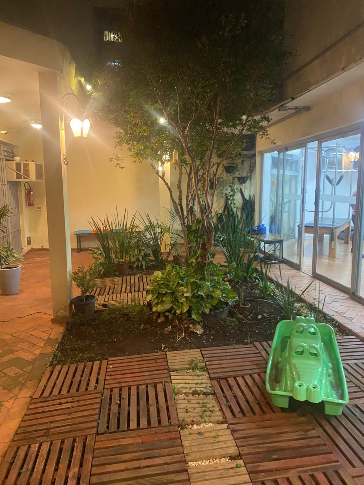

Fisioterapia ortopédica no bairro Saúde
Pós-operatório, dor na coluna, lesões e fraturas. Atendimento individual na Rua Dr. Samuel Porto, 396, a cinco minutos do Metrô Saúde.
- Uma fisioterapeuta por paciente, durante toda a sessão
- Não precisa de pedido médico para agendar
- Particular, com nota fiscal e relatório para pedir reembolso ao plano
- Programa de reabilitação parcelado em até 10x sem juros

O que atendemos
Pós-operatório
- Ligamento cruzado (LCA) e menisco
- Prótese de joelho e de quadril
- Manguito rotador e outras cirurgias de ombro
- Cirurgias de coluna e fraturas operadas
Lesões e fraturas
- Entorse de tornozelo e de joelho
- Reabilitação depois da retirada do gesso
- Lesões musculares e do esporte
- Tendinites e bursites
Quem atende
Como funciona
- Você fala com a recepção pelo WhatsApp ou por telefone e marca a avaliação.
- Na avaliação, a fisioterapeuta conversa com você, examina e combina os objetivos do tratamento. Se tiver exames, relatório da cirurgia ou pedido médico, traga.
- A partir da avaliação, ela monta o seu programa de reabilitação individualizado, com a frequência e o número de sessões indicados para o seu caso.
- Ao longo do programa, você é reavaliado para ajustar o tratamento até a alta.
Dúvidas frequentes
Preciso de pedido médico?
Não. Se você tiver pedido, exames ou relatório da cirurgia, eles ajudam na avaliação.
Quando posso começar depois da cirurgia?
Depende da cirurgia e da liberação do seu médico. A nossa equipe organiza o início de acordo com a orientação dele.
Vocês atendem convênio?
O atendimento é particular. Emitimos nota fiscal e relatório para você pedir reembolso ao seu plano de saúde. O valor reembolsado depende de cada plano.
Quantas sessões vou precisar?
Depende do caso. O número de sessões é definido na avaliação e revisto nas reavaliações.
Como funciona o pagamento?
O programa de reabilitação individualizado pode ser parcelado em até 10x sem juros. Também há sessões avulsas. A recepção informa os valores pelo WhatsApp.
Endereço
Rua Dr. Samuel Porto, 396 — Saúde, São Paulo
A cinco minutos a pé do Metrô Saúde (Linha 1-Azul).
Ver no Google Maps